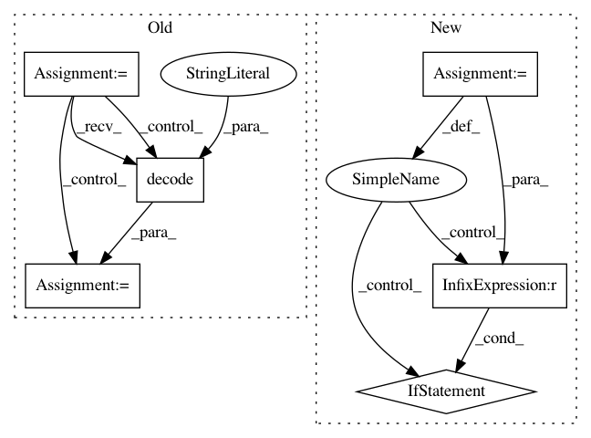

d3babe1252d05f07e58a6602b47e1a09bbd56af5,networkml/parsers/pcap/reader.py,,packetizer,#Any#,67
Before Change
)
packet_dict = OrderedDict()
buf = ""
for line in proc.stdout:
line = line.decode("utf-8")
if not line.startswith(" "):
continue
if line.startswith(" ,"):
continue
buf += line
if line.startswith(" }"):
parse_buf(buf)
buf = ""
return packet_dict
def sessionizer(path, duration=None, threshold_time=None):
After Change
packet_dict = OrderedDict()
with pyshark.FileCapture(path, use_json=True, include_raw=True,
custom_parameters={"-o": "tcp.desegment_tcp_streams:false"}) as cap:
for packet in cap:
data = packet.get_raw_packet()
head = parse_packet_head(packet)
if head is not None:
packet_dict[head] = binascii.hexlify(data).decode("utf-8")
return packet_dict
def sessionizer(path, duration=None, threshold_time=None):
In pattern: SUPERPATTERN
Frequency: 3
Non-data size: 6
Instances
Project Name: CyberReboot/NetworkML
Commit Name: d3babe1252d05f07e58a6602b47e1a09bbd56af5
Time: 2019-12-10
Author: josh@vandervecken.com
File Name: networkml/parsers/pcap/reader.py
Class Name:
Method Name: packetizer
Project Name: commonsense/conceptnet5
Commit Name: db4b9f4d50af9e83733fc301c32e85cbe6d9c812
Time: 2014-02-25
Author: rob@luminoso.com
File Name: conceptnet5/builders/json_to_solr.py
Class Name:
Method Name: convert_to_solr
Project Name: senarvi/theanolm
Commit Name: 04229ae7c14ebdbc043831e5ffe47a561dcdf31c
Time: 2015-10-16
Author: seppo.git@marjaniemi.com
File Name: theanolm/iterators.py
Class Name: BatchIterator
Method Name: __len__